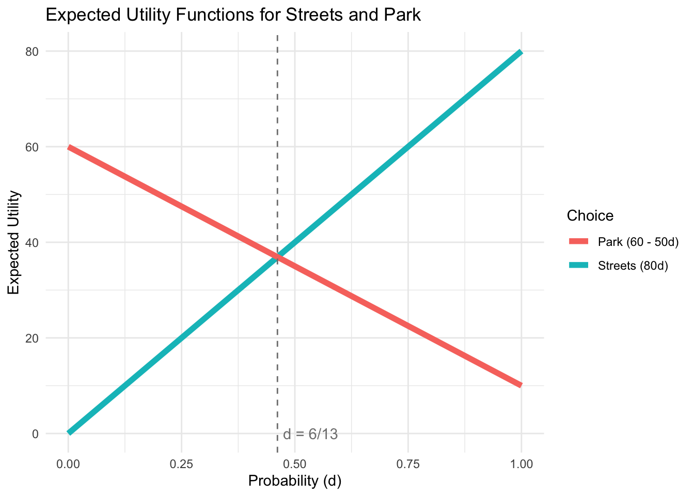
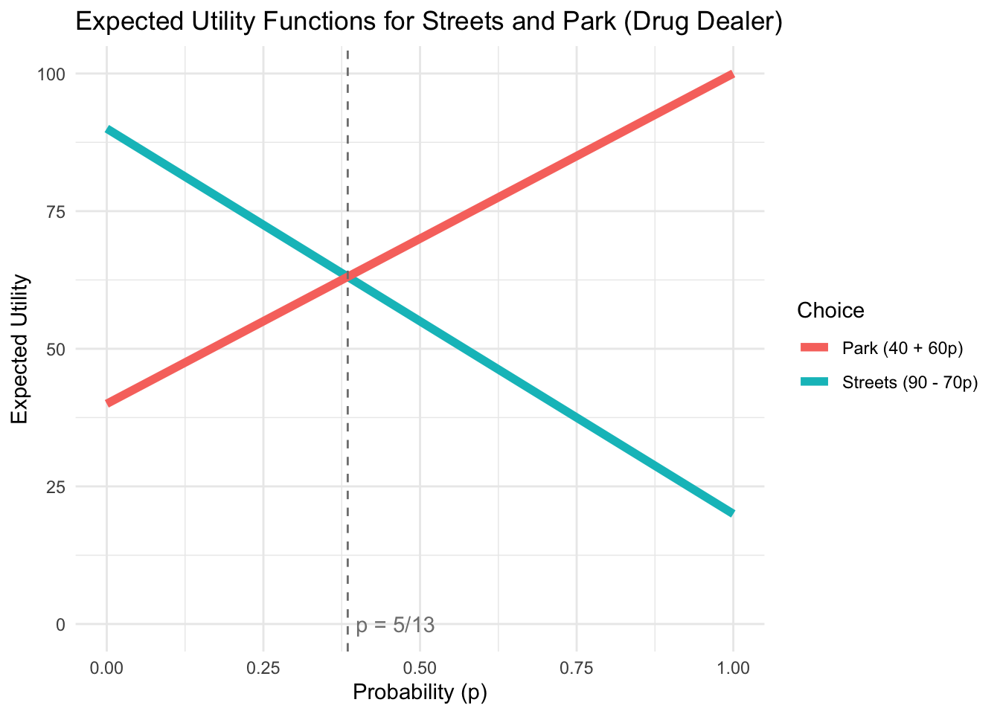
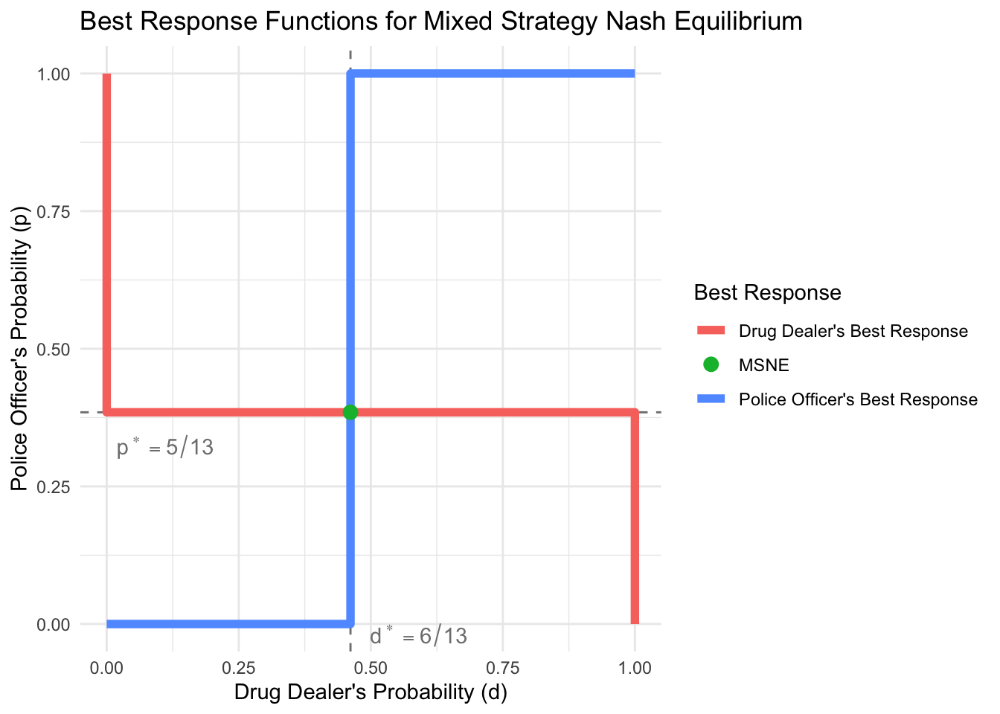
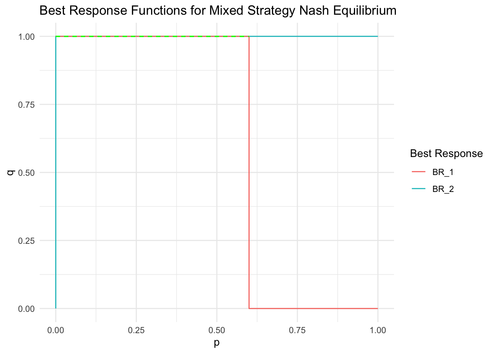
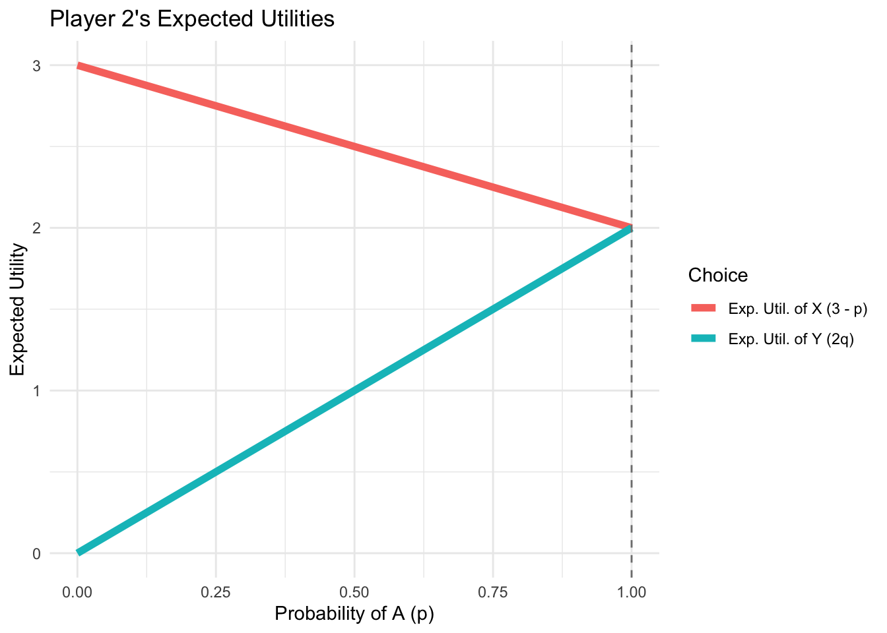
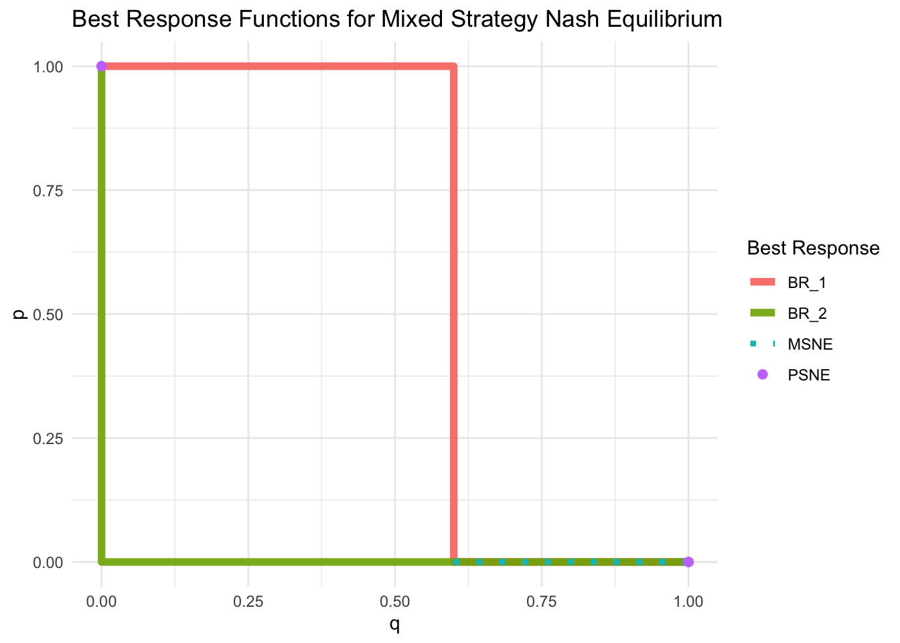

Internal Uncertainty
Now that we discussed external uncertainty over states of nature, let’s talk about internal uncertainty
Internal uncertainty occurs when one or more players pick their strategies randomly.
Picking a strategy at random is really just a different kind of strategy, called a mixed strategy.
Mixed Strategies
When a player always does the same thing, it’s called a pure strategy
A mixed strategy assigns a probability to each of a player’s pure strategies.
- Like a lottery, the probabilities in a mixed strategy must all be between 0 and 1,
- and must sum to exactly 1.
Mixed Strategies
- A mixed strategy can assign 0 probability to a pure strategy.
- It can even assign probability 1 to a single pure strategy, and probability 0 to all others
- this is still, technically, a mixed strategy, but it is a trivial one.
- When a player uses a mixed strategy, it turns the other player’s payoffs into lotteries.
Mixed Strategies in the Deer Hunt
Consider the Deer Hunt:
| Igg, Ogg | Deer | Rabbit |
|---|---|---|
| Deer | \(2, 2\) | \(0, 1\) |
| Rabbit | \(1, 0\) | \(1, 1\) |
Suppose that Igg hunts Deer 3/4 of the time, and Rabbit 1/4 of the time.
- If Ogg always hunts deer; what is Ogg’s expected payoff?
- Ogg’s expected payoff from playing Deer will be \(0.75(2) + 0.25(0) = 1.5\).
Mixed Strategies in the Deer Hunt: Generalizing
We can generalize this approach to calculate Ogg’s expected payoffs from any strategy that Igg chooses to play:
- Suppose that Igg plays Deer with probability p, and Rabbit with probability 1 - p.
- Then Ogg’s expected payoff from Deer is:
- \(2(p) + 0(1 - p) = 2p\), and from Rabbit, it is \(1(p) + 1(1 - p) = 1\).
- Note that Ogg’s expected payoff from Deer gets larger with p: the more likely Igg is to hunt Deer, the more attractive an option it becomes for Ogg.
When to Play a Mixed Strategy?
It’s possible for a mixed strategy to be a best response to the other player’s strategy:
- if and only if all of the mixed strategy’s components (pure strategies that are assigned positive probability) are best responses too.
- Some intuition: If a strategy is not a best response, you should not play it—even as part of a mixed strategy.
When to play a Mixed Strategy?
If a player only has two pure strategies, it becomes simple to tell when a mixed strategy is a best response: the mixed strategy must be a mixture of those two pure strategies, and the only way that both of them are best responses is if they have equal expected payoffs.
- Taking the Deer Hunt as an example, the only way that it can be a best response for Ogg to play a mixed strategy is if Deer and Rabbit provide Ogg with equal expected payoffs: we must have \(2p = 1\), or \(p = \frac{1}{2}\).
What Mixed Strategy to Play
- However, if any mixed strategy is a best response, then all mixed strategies (with the same components) are also best responses.
- Intuitively, if the pure strategies going into a mixed strategy are just as good as each other, then it doesn’t matter what proportions you mix them in.
- This means that, while it’s easy to solve for when it’s rational for a player to use a mixed strategy, there’s no way to solve for a particular mixed strategy that the player should play.
Mixed-Strategy Nash Equilibrium
To solve for the Nash equilibria where players are allowed to use mixed strategies: we need to look for the conditions under which a player would be willing to use a mixed strategy.
- This means that we’re going to use one player’s expected payoffs to solve for the other player’s mixed strategy
MSNE in the Deer Hunt
Let’s say that Igg plays Deer with probability \(p\) and Rabbit with probability \(1 - p\)
While Ogg plays Deer with probability \(q\) and Rabbit with probability \(1 - q\).
- This is simply a framework for describing each player’s mixed strategies: we’re using placeholder variables for the players’ mixed strategy probabilities
MSNE in the Deer Hunt
We already saw that Ogg’s expected payoffs from Deer and Rabbit are \(2p\) and \(1\), respectively,
so Ogg would only play a mixed strategy if \(p = \frac{1}{2}\).
- Likewise, Igg’s expected payoffs are \(2q\) and \(1\), and Igg will play a mixed strategy if \(q = \frac{1}{2}\).
- The MSNE in this game can be written as: \[ \{(1/2~Deer, 1/2~Rabbit)_{Ogg}, \ (1/2~Deer, 1/2~Rabbit)_{Igg}\}\].
Error-Checking
Make sure that you’re setting up the equations used to solve for a player’s strategy correctly:
- Describe when a player is indifferent between their pure strategies:
- if you’re trying to figure out when Player 1 is indifferent, you need to use Player 1’s payoffs.
- However, the probabilities will be based on the other player’s mixed strategy:
- in a game with mixed strategies, the randomness a player deals with is created by the other player—not themselves.
Another Example: Police Patrol and Drug Trade
| Police, Dealer | Streets (d) | Park (1 - d) |
|---|---|---|
| Streets (p) | 80, 20 | 0,100 |
| Park (1 - p) | 10, 90 | 60,40 |
- Police Officer’s expected utility:
- \(U_P(Streets) = 80d + 0(1-d)\)
- \(= 80d\)
- \(U_P(Park) = 10d + 60(1-d)\)
- \(= 60 - 50d\).
- \(U_P(Streets) = 80d + 0(1-d)\)
- Drug Dealer’s expected utility:
- \(U_D(Streets) = 20p + 90(1-p)\)
- \(= 90 - 70p\)
- \(U_D(Park) = 100p + 40(1-p)\)
- \(= 40 + 60p\).
- \(U_D(Streets) = 20p + 90(1-p)\)
MSNE in Patrol and Trade game:
When is the Police Officer indifferent between going to the Park and going to the Streets?
When is the Drug Dealer indifferent between going to the Park and going to the Streets?
What is the Mixed Strategies Nash equilibrium?
Graph Police Officer’s expected utilities
Graph Drug Dealer’s expected utilities

Graph Best Response functions
Code
library(tidyverse)
library(latex2exp)
data <- tibble(
d = c(0, 6/13, 6/13, 1),
PR = c(0, 0, 1, 1),
p = c(1, 5/13, 5/13, 0),
DR = c(0, 0, 1, 1),
)
# Plot the best response functions
ggplot(data) +
geom_hline(yintercept = 5/13, linetype = "dashed", color = "grey50") +
geom_vline(xintercept = 6/13, linetype = "dashed", color = "grey50") +
geom_step(aes(x = d, y = PR, color = "Police Officer's Best Response"), direction = "hv", linewidth = 2) +
geom_step(aes(x = DR, y = p, color = "Drug Dealer's Best Response"), direction = "hv", linewidth = 2) +
geom_point(data = tibble(d = 6/13, p = 5/13), aes(x=d, y=p, color = "MSNE"), size = 3) +
annotate("text", y = 5/13, x = 0, label = TeX("$p^* = 5/13$"), hjust = -0.1, vjust = 2, color = "grey50") +
annotate("text", x = 6/13, y = 0, label = TeX("$d^* = 6/13$"), hjust = -0.2, vjust = 1, color = "grey50") +
labs(title = "Best Response Functions for Mixed Strategy Nash Equilibrium",
x = "Drug Dealer's Probability (d)",
y = "Police Officer's Probability (p)",
color = "Best Response") +
theme_minimal()
MSNE in Patrol and Trade game:
Note that the players’ asymmetric preferences result in an interior solution.
Notice that it isn’t a 50:50, it is more likely that both meet in the Park than it is likely that they both meet in the Streets —
Practice your understanding
Consider the following game table. What are Player 1’s expected payoffs, given Player 2’s mixed strategy?
| \(P_1\), \(P_2\) | Up \((q)\) | Down \((1 - q)\) |
|---|---|---|
| Up \((p)\) | 2, -2 | -3, 3 |
| Down \((1 - p)\) | -5, 5 | 1, -1 |
- \(U_1(Up) = 2q -3(1-q) = 5q - 3\),
- \(U_1(Down) = -5q + 1(1-q) = -6q +1\)
Practice your understanding
Consider the following game table. What are Player 2’s expected payoffs, given Player 1’s mixed strategy?
| \(P_1\), \(P_2\) | Up \((q)\) | Down \((1 - q)\) |
|---|---|---|
| Up \((p)\) | 2, -2 | -3, 3 |
| Down \((1 - p)\) | -5, 5 | 1, -1 |
- \(U_2(Up) = -2p + 5(1-p) = -7p + 5\),
- \(U_2(Down) = 3p - 1(1-p) = 4p -1\)
Practice your understanding
The correct answers to the previous two questions were:
- \(U_1(Up) = 5q - 3\)
- $U_1(Down) = -6q + 1 $.
- \(U_2(Up) = -7p + 5\)
- \(U_2(Down) = 4p - 1\).
Based on this, what are \(p\) and \(q\) in the MSNE of this game?
- \(p^* = 6/11\)
- \(q^* = 4/11\)
Multiple MSNE in one game
Consider the following game table:
| \(P_1\), \(P_2\) | \(X~(q)\) | \(Y~(1 - q)\) |
|---|---|---|
| \(A~(p)\) | 2, 2 | 3, 2 |
| \(B~(1 - p)\) | 4, 3 | 0, 0 |
The players’ expected payoffs are:
\[ \begin{align*} U_1(A) & = 2q + 3(1 - q) \\ & = 2q + 3 - 3q \\ & = 3 - q \\ U_1(B) & = 4q + 0(1 - q) \\ & = 4q \\ U_2(X) & = 2p + 3(1 - p) \\ & = 2p + 3 - 3p \\ & = 3 - p \\ U_2(Y) & = 2p + 0(1 - p) \\ & = 2p \end{align*} \]
Multiple MSNE in one game
Based on this, the conditions under which each player will use a mixed strategy are:
\[ \begin{align*} Player~1: && Player~2:&\\ 3 - q &= 4q & 3 - p &= 2p\\ 3 &= 5q & 3 &= 3p\\ q &= 3/5 & p &= 1 \end{align*} \]
- We’ve never seen anything like \(p = 1\) in this context before…
- Player 2 will only mix if Player 1 only plays A
- This usually occurs when one strategy weakly dominates another.
Multiple MSNE in one game


Multiple MSNE in one game
We can still approach this the same way that we have in the past:
| \(P_1\), \(P_2\) | \(X~(q)\) | \(Y~(1 - q)\) |
|---|---|---|
| \(A~(p)\) | 2, 2 | 3, 2 |
| \(B~(1 - p)\) | 4, 3 | 0, 0 |
- Suppose in MSNE that Player 1 plays a (non-trivial) mixed strategy.
- Then Player 2 must also play a mixed strategy, in which q = 3/5.
- But Player 2 will only mix if Player 1 plays p = 1, which is a trivial mixed strategy.
- This is a contradiction, there is no MSNE where Player 1 plays a non-trivial mixed strategy
Multiple MSNE in one game
Approach it the other way next:
| \(P_1\), \(P_2\) | \(X~(q)\) | \(Y~(1 - q)\) |
|---|---|---|
| \(A~(p)\) | 2, 2 | 3, 2 |
| \(B~(1 - p)\) | 4, 3 | 0, 0 |
Suppose Player 2 plays a non-trivial mixed strategy.
- Then Player 1 must play A as a pure strategy.
- Player 2 will play A if \(3 - q \geq 4q\), i.e. if \(3/5 \geq q\).
- This lets Player 2 play a non-trivial mixed strategy! There is no contradiction here.
Multiple MSNE in one game
- There are a range of MSNEs here: all strategy profiles \((1, 0), (q, 1 - q)\), in which \(q \in (0, 3/5]\)
- There are also two trivial MSNEs, \((1, 0), (0, 1)\) and \((0, 1), (1, 0)\), which are really just the pure-strategy Nash equilibria (A, Y) and (B, X) expressed in the form of an MSNE.
- It will help to understand what’s going on with the Best Responses graph:
Multiple MSNE in one game
Code
# Create a data frame for plotting
data <- data.frame(
q = c(0, 3/5, 3/5, 1),
BR1 = c(1, 1, 0, 0),
p = c(1, 0, 0, 0),
BR2 = c(0, 1, 1, 1)
)
# Plot the best response functions
ggplot(data) +
geom_step(aes(x = q, y = BR1, color = "BR_1"), direction = "hv", linewidth = 2, alpha = 0.9) +
geom_step(aes(x = BR2, y = p, color = "BR_2"), direction = "vh", linewidth = 2, alpha = 0.9) +
geom_segment(aes(x = 3/5, xend = 1, y = 0, yend = 0, color = "MSNE"), linewidth = 1.5, linetype = "dotted") +
geom_point(aes(x=0, y=1, color = "PSNE"), size = 2) +
geom_point(aes(x=1, y=0, color = "PSNE"), size = 2) +
labs(title = "Best Response Functions for Mixed Strategy Nash Equilibrium",
x = "q",
y = "p",
color = "Best Response") +
theme_minimal()
Absence of MSNEs
Let us return to the Prisoner’s Dilemma and check for MSNEs:
| Guido, Luca | \(Testify~(q)\) | \(Keep~Quiet~(1-q)\) |
|---|---|---|
| \(Testify~(p)\) | \(-10,-10\) | \(0,-20\) |
| \(Keep~Quiet~(1-p)\) | \(-20,0\) | \(-1,-1\) |
Guido and Luca’s expected payoffs are:
- \(U_G(Testify) = -10q + 0(1 - q) = -10q\).
- \(U_G(Keep Quiet) = -20q + (-1)(1 - q) = -1 - 19q\).
- \(U_L(Testify) = -10p + 0(1 - p) = -10p\).
- \(U_L(Keep Quiet) = -20p + (-1)(1 - p) = -1 - 19p\).
Absence of MSNEs
Guido will play a mixed strategy if:
\[ \begin{align*} -10q &= -1 - 19q\\ 9q &= -1\\ q &= -1/9 \end{align*} \]
- But -1/9 is not a valid probability!
- We could also note that if \(q\in [0, 1]\):
- \(-10q\) is always greater than \(-1 - 19q\).
- In other words, as we saw weeks ago, \(Testify\) strictly dominates \(Keep~Quiet\)…so why would Guido mix between the two of them?
Getting Bad Probabilities
If you’ve solved for a player’s mixed strategy and you find that the probability is less than 0, or more than 1:
- It means something is wrong. Probability can only be between 0 and 1 (inclusive).
- Double-check your math—it could be an algebra error.
- But if you’re confident in your math, this means that there is no way that the player would ever play a mixed strategy:
- in fact, they have a strictly dominated strategy.
Footnotes
Harrington, pg. 226↩︎